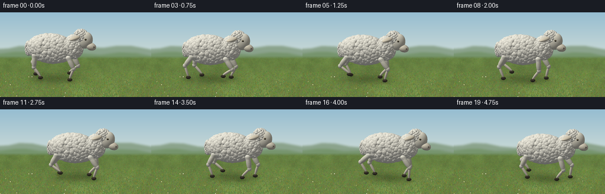

CODING AGENTS AS PIXEL WORLD MODELS
traex/GPT-6.1-Sol · instance_preservation_0015
点击播放 · 原生 RGB 像素
逐轮保存的候选
回放视频、检查图与代码变化。
每份候选均可单独播放。实际图片检查记录在下方工具轨迹中。
候选 01播放与检查图
点击播放 · 原生 RGB 像素

展开代码变化
--- 上一保存版本
+++ 本次保存版本
@@ -0,0 +1,263 @@
+"""Text-only, deterministic procedural RGB animation of a walking white sheep.
+Uses analytic ellipsoid geometry and a small orthographic raster/ray renderer.
+"""
+from pathlib import Path
+import json, math
+import numpy as np
+from PIL import Image, ImageDraw, ImageFilter
+from scipy.ndimage import gaussian_filter
+import artifact_io
+
+ROOT = Path(__file__).resolve().parent
+SPEC = json.loads((ROOT / 'task_spec.json').read_text())
+W,H = SPEC['width'],SPEC['height']
+SS=3
+SW,SH=W*SS,H*SS
+SCALE=52.0*SS
+CX,CY=125.0*SS,115.0*SS
+R=np.array([.952,0,-.306]); R/=np.linalg.norm(R)
+D=np.array([.298,.231,.929]); D/=np.linalg.norm(D)
+R=np.cross([0,1,0],D); R/=np.linalg.norm(R)
+U=np.cross(D,R)
+LIGHT=np.array([-.43,.79,.44]); LIGHT/=np.linalg.norm(LIGHT)
+rng=np.random.default_rng(3819)
+
+def project(p):
+ p=np.asarray(p)
+ return np.array([CX+SCALE*p.dot(R),CY-SCALE*p.dot(U)])
+
+def backdrop():
+ yy,xx=np.mgrid[:SH,:SW]; yf=yy/SS; xf=xx/SS
+ top=np.array([150.,189.,209.]); bottom=np.array([210.,222.,215.])
+ f=np.clip(yf/83,0,1)[...,None]
+ a=top*(1-f)+bottom*f
+ # Quiet distant hills, with a little atmospheric perspective.
+ im=Image.fromarray(np.uint8(a))
+ d=ImageDraw.Draw(im)
+ def hill(points,col):
+ d.polygon([(int(x*SS),int(y*SS)) for x,y in points]+[(SW,SH),(0,SH)],fill=col)
+ hill([(0,62),(15,61),(33,57),(55,58),(79,63),(103,65),(128,62),(150,59),(175,60),(196,57),(223,57),(256,63)],(139,163,140))
+ hill([(0,70),(24,67),(44,67),(70,71),(99,70),(123,68),(144,70),(170,72),(202,68),(231,69),(256,74)],(119,149,109))
+ im=im.filter(ImageFilter.GaussianBlur(1.8*SS))
+ a=np.asarray(im).astype(float)
+ # Grass meadow: multiscale random texture, warmly lit in the foreground.
+ noise=np.zeros((SH,SW))
+ for sig,amp in [(1.2,1.9),(4,2.8),(13,5),(42,7)]:
+ n=gaussian_filter(rng.normal(size=(SH,SW)),sig)
+ noise+=amp*n/max(n.std(),.0001)
+ grad=np.clip((yf-73)/71,0,1)
+ base=np.stack([102+15*grad,130+9*grad,66+8*grad],axis=-1)
+ base+=noise[...,None]*np.array([.60,.75,.38])
+ # Very subtle patches keep the ground from looking like a flat stage.
+ groundmix=np.clip((yf-74)/5,0,1)[...,None]
+ a=a*(1-groundmix)+base*groundmix
+ im=Image.fromarray(np.uint8(np.clip(a,0,255)))
+ d=ImageDraw.Draw(im)
+ for i in range(11500):
+ x=rng.uniform(-1,W+1); y=rng.uniform(77,H+3)
+ near=(y-77)/67
+ length=rng.uniform(.3,1.25)*(0.3+near*2.3)
+ lean=rng.normal(0,.40)*length
+ col=(int(rng.uniform(83,131)),int(rng.uniform(112,150)),int(rng.uniform(48,80)))
+ d.line([(int(x*SS),int(y*SS)),(int((x+lean)*SS),int((y-length)*SS))],fill=col,width=1 if near<.35 else 2)
+ # Tiny naturally scattered clover heads, not a decorative flower border.
+ for i in range(30):
+ x=rng.uniform(0,W); y=rng.uniform(109,H)
+ if 55<x<210 and y<127: continue
+ r=rng.uniform(.35,.65)*SS
+ col=(190,187,134) if i%3 else (216,217,184)
+ d.ellipse([x*SS-r,y*SS-r,x*SS+r,y*SS+r],fill=col)
+ return np.asarray(im).astype(float)
+
+BG=backdrop()
+YPIX,XPIX=np.mgrid[:SH,:SW]
+
+class Renderer:
+ def __init__(self, bg):
+ self.rgb=bg.copy()
+ self.depth=np.full((SH,SW),-1e8)
+ def ellipsoid(self,c,r,col,axes=None,wool=False,seed=0):
+ c=np.asarray(c,dtype=float); r=np.asarray(r,dtype=float)
+ A=np.eye(3) if axes is None else np.asarray(axes)
+ q=project(c)
+ # Exact projected extent of an ellipsoid.
+ extx=SCALE*np.linalg.norm((R@A)*r)
+ exty=SCALE*np.linalg.norm((U@A)*r)
+ x0=max(0,int(q[0]-extx-2)); x1=min(SW,int(q[0]+extx+3))
+ y0=max(0,int(q[1]-exty-2)); y1=min(SH,int(q[1]+exty+3))
+ if x0>=x1 or y0>=y1: return
+ xx=(XPIX[y0:y1,x0:x1]+.5-CX)/SCALE
+ yy=(CY-YPIX[y0:y1,x0:x1]-.5)/SCALE
+ origin=xx[...,None]*R+yy[...,None]*U-c
+ oo=(origin@A)/r
+ v=(D@A)/r
+ aa=v.dot(v); bb=np.sum(oo*v,axis=-1)
+ cc=np.sum(oo*oo,axis=-1)-1
+ det=bb*bb-aa*cc
+ hit=det>=0
+ tt=(-bb+np.sqrt(np.maximum(0,det)))/aa
+ zb=self.depth[y0:y1,x0:x1]
+ hit &= tt>zb
+ if not hit.any(): return
+ local=(origin+tt[...,None]*D)@A
+ normal=(local/(r*r))@A.T
+ normal/=np.maximum(np.linalg.norm(normal,axis=-1)[...,None],1e-9)
+ diffuse=np.maximum(0,normal@LIGHT)
+ shade=.48+.48*diffuse+.055*normal[...,1]
+ # Broad, warm illumination with cool occluded undersides.
+ colors=np.asarray(col)[None,None,:]*shade[...,None]
+ if wool:
+ p=origin+tt[...,None]*D+c
+ # Fine irregular crimp in the fleece, independent of frame time.
+ tex=(np.sin(p[...,0]*187+np.sin(p[...,1]*139)*1.6+seed)
+ *np.sin(p[...,2]*163+p[...,1]*111+seed*.61))
+ tex2=np.sin(p[...,0]*64+p[...,2]*80)*np.sin(p[...,1]*73+seed)
+ colors += (tex*3.4+tex2*2.1)[...,None]
+ else:
+ spec=np.maximum(0,normal@((LIGHT+D)/np.linalg.norm(LIGHT+D)))**45
+ colors+=spec[...,None]*6
+ colors+=np.maximum(0,-normal[...,1])[...,None]*np.array([-4,-2,2])
+ dest=self.rgb[y0:y1,x0:x1]
+ dest[hit]=np.clip(colors[hit],0,255)
+ zb[hit]=tt[hit]
+ def link(self,a,b,width,col,wool=False):
+ a=np.asarray(a); b=np.asarray(b)
+ direction=b-a; length=np.linalg.norm(direction)
+ direction/=length
+ guide=np.array([0.,0.,1.])
+ if abs(direction.dot(guide))>.9: guide=np.array([1.,0.,0.])
+ t=np.cross(direction,guide); t/=np.linalg.norm(t)
+ v=np.cross(direction,t)
+ self.ellipsoid((a+b)/2,[width,length/2+width*.65,width],col,np.column_stack([t,direction,v]),wool)
+
+# Bumps are permanent surface features: they move rigidly with the sheep.
+def make_fleece(center,radii,count,bump,seed):
+ rr=np.random.default_rng(seed)
+ out=[]
+ golden=math.pi*(3-math.sqrt(5))
+ for k in range(count):
+ y=1-2*(k+.5)/count
+ angle=k*golden+rr.uniform(-.18,.18)
+ v=np.array([math.sqrt(1-y*y)*math.cos(angle),y,math.sqrt(1-y*y)*math.sin(angle)])
+ p=np.array(center)+v*np.array(radii)
+ normal=v/np.array(radii); normal/=np.linalg.norm(normal)
+ tangent=np.cross(normal,[0,1,0])
+ if np.linalg.norm(tangent)<.01: tangent=np.cross(normal,[1,0,0])
+ tangent/=np.linalg.norm(tangent)
+ axis=np.column_stack([tangent,np.cross(normal,tangent),normal])
+ rad=bump*rr.uniform(.77,1.19)
+ radii_b=[rad,rad*rr.uniform(.85,1.13),rad*.65]
+ cream=rr.uniform(-6,3)
+ col=np.array([239,236,222])+cream
+ out.append((p,radii_b,col,axis,k*.717+seed))
+ return out
+
+FLEECE=make_fleece([-.13,.99,0],[.78,.455,.355],620,.075,16)
+NECK=make_fleece([.64,1.11,0],[.29,.38,.29],175,.063,29)
+CAP=make_fleece([.88,1.49,0],[.22,.20,.20],105,.044,12)
+TAIL=make_fleece([-.91,.94,0],[.10,.23,.12],65,.043,32)
+
+
+def gait(phase):
+ q=phase%1
+ stance=.64
+ if q<stance:
+ return .20-.40*q/stance,0
+ s=(q-stance)/(1-stance)
+ return -.20+.40*(.5-.5*math.cos(math.pi*s)),.135*math.sin(math.pi*s)
+
+def pose_leg(hip,foot,front):
+ h=np.array(hip); f=np.array(foot)
+ # Two-link inverse kinematics keeps knee and hoof motion anatomically coherent.
+ delta=f-h; L=np.linalg.norm(delta); a,b=.39,.40
+ mid=(a*a-b*b+L*L)/(2*L)
+ bend=math.sqrt(max(.002,a*a-mid*mid))
+ perp=np.array([-delta[1],delta[0],0]); perp/=np.linalg.norm(perp)
+ knee=h+delta/L*mid+perp*bend*(1 if front else -1)
+ return knee
+
+def render_frame(t):
+ walk_x=-.64+.275*t
+ bob=.013*math.cos(4*math.pi*t/.99)
+ shift=np.array([walk_x,bob,0.])
+ leg_data=[]
+ # A four-beat walk, with a long planted phase and short lifted recovery.
+ for front,z,offset in [(False,-.235,.5),(True,-.235,.75),(False,.235,0),(True,.235,.25)]:
+ dx,lift=gait(t/1.45+offset)
+ hx=.53 if front else -.63
+ hip=np.array([hx,.765+bob,z])+[walk_x,0,0]
+ foot=np.array([hx+dx+walk_x,.054+lift,z])
+ knee=pose_leg(hip,foot,front)
+ leg_data.append((hip,knee,foot,front,z))
+ # Broad soft contact shadow, plus the small shadows under each foot.
+ shcenter=project([walk_x-.04,0,0])
+ dx=(XPIX-shcenter[0])/(.91*SCALE)
+ dy=(YPIX-shcenter[1])/(.23*SCALE)
+ shadow=.24*np.exp(-(dx*dx+dy*dy)*1.8)
+ for _,_,foot,_,_ in leg_data:
+ q=project([foot[0],0,foot[2]])
+ shadow+=.17*np.exp(-((XPIX-q[0])/(.13*SCALE))**2-((YPIX-q[1])/(.048*SCALE))**2)*math.exp(-foot[1]*4)
+ bg=BG*(1-np.minimum(.40,shadow)[...,None])
+ scene=Renderer(bg)
+ for hip,knee,foot,front,z in leg_data:
+ scene.link(hip,knee,.085,[221,217,198],True)
+ scene.ellipsoid(knee,[.073,.078,.07],[224,220,203],wool=True)
+ scene.link(knee,foot+[0,.045,0],.043,[219,211,190])
+ scene.ellipsoid(foot,[.078,.053,.061],[62,57,45])
+ # Distinct cloven halves, with a dark central cleft.
+ scene.ellipsoid(foot+[.015,-.002,.025],[.065,.047,.029],[67,62,49])
+ scene.ellipsoid(foot+[.015,-.002,-.027],[.065,.047,.025],[74,66,50])
+ # Shaggy transition from fleece into the legs.
+ for k in range(9):
+ p=hip+(k/11)*(knee-hip)
+ scene.ellipsoid(p,[.094-k*.004,.081,.080-k*.003],[232,229,213],wool=True,seed=k)
+ scene.ellipsoid(np.array([-.13,.99,0])+shift,[.78,.455,.355],[231,228,213],wool=True)
+ scene.ellipsoid(np.array([.64,1.11,0])+shift,[.29,.38,.29],[234,230,215],wool=True)
+ for bunch in [FLEECE,NECK,TAIL]:
+ for p,r,col,axis,seed in bunch:
+ scene.ellipsoid(p+shift,r,col,axis,True,seed)
+ # Subtle rhythmic head motion; head never changes identity or proportions.
+ nod=.013*math.sin(2*math.pi*t/1.45+.35)
+ hs=shift+np.array([0,nod,0])
+ # Both lateral ears are attached high behind the eyes.
+ for sign in [-1,1]:
+ a=np.array([.86,1.49,sign*.13])+hs
+ b=np.array([.69,1.44,sign*.45])+hs
+ vec=b-a; length=np.linalg.norm(vec); vec/=length
+ ax=np.cross([0,1,0],vec); ax/=np.linalg.norm(ax)
+ normal=np.cross(vec,ax)
+ axes=np.column_stack([vec,normal,ax])
+ scene.ellipsoid((a+b)/2,[length*.64,.062,.112],[223,213,190],axes)
+ inner=(a+b)/2+np.array([.005,.024,sign*.012])
+ scene.ellipsoid(inner,[length*.48,.027,.076],[186,153,134],axes)
+ # Long, short-haired face and rounded muzzle characteristic of a sheep.
+ theta=-.32
+ A=np.array([[math.cos(theta),-math.sin(theta),0],[math.sin(theta),math.cos(theta),0],[0,0,1]])
+ scene.ellipsoid(np.array([1.04,1.345,0])+hs,[.235,.285,.18],[231,226,207],A)
+ scene.ellipsoid(np.array([1.225,1.15,0])+hs,[.176,.126,.146],[226,218,196],A)
+ scene.ellipsoid(np.array([1.32,1.14,0])+hs,[.069,.067,.119],[184,177,160],A)
+ # Near and far eyes; tiny highlights rather than oversized cartoon eyes.
+ for sign in [-1,1]:
+ p=np.array([1.087,1.407,sign*.160])+hs
+ scene.ellipsoid(p,[.047,.040,.019],[154,143,117])
+ scene.ellipsoid(p+[.006,-.002,sign*.009],[.029,.026,.014],[32,29,23])
+ scene.ellipsoid(p+[.003,.007,sign*.022],[.008,.007,.0035],[231,231,216])
+ nose=np.array([1.341,1.16,sign*.087])+hs
+ scene.ellipsoid(nose,[.027,.018,.018],[70,64,54],A)
+ # Quiet mouth line around the lower lip and small short-haired chin.
+ scene.link(np.array([1.23,1.065,.119])+hs,np.array([1.326,1.095,.08])+hs,.008,[116,103,86])
+ scene.ellipsoid(np.array([1.24,1.065,0])+hs,[.115,.042,.096],[217,210,192])
+ for p,r,col,axis,seed in CAP:
+ scene.ellipsoid(p+hs,r,col,axis,True,seed)
+ # Very restrained optical softness, then supersample down to the required RGB.
+ im=Image.fromarray(np.uint8(np.clip(scene.rgb,0,255)))
+ im=im.resize((W,H),Image.Resampling.LANCZOS)
+ return np.asarray(im)
+
+if __name__=='__main__':
+ frames=[]
+ for i in range(SPEC['frames']):
+ frames.append(render_frame(i/SPEC['fps']))
+ print(f'Rendered frame {i+1}/{SPEC["frames"]}',flush=True)
+ artifact_io.save(np.stack(frames),ROOT)
+ print('Saved RGB video artifacts.',flush=True)
候选 02播放与检查图
点击播放 · 原生 RGB 像素

展开代码变化
--- 上一保存版本
+++ 本次保存版本
@@ -161,10 +161,12 @@
def gait(phase):
q=phase%1
stance=.64
+ # Match backward foot travel to forward body speed: planted hooves stay still.
+ stride=.275*1.45*stance
if q<stance:
- return .20-.40*q/stance,0
+ return stride/2-stride*q/stance,0
s=(q-stance)/(1-stance)
- return -.20+.40*(.5-.5*math.cos(math.pi*s)),.135*math.sin(math.pi*s)
+ return -stride/2+stride*(.5-.5*math.cos(math.pi*s)),.135*math.sin(math.pi*s)
def pose_leg(hip,foot,front):
h=np.array(hip); f=np.array(foot)
候选 03播放与检查图
可观测工具轨迹
实际执行的命令与返回图片。
命令 1exit 0
/bin/bash -lc "ls -la && cat prompt.txt && printf '\\n--- RULES ---\\n' && cat GENERATION_RULES.md && printf '\\n--- SPEC ---\\n' && cat task_spec.json"
命令 2exit 0
/bin/bash -lc "cat artifact_io.py && printf '\\n--- local packages ---\\n' && python - <<'PY' import importlib.util for m in ['numpy','PIL','scipy']: print(m, bool(importlib.util.find_spec(m))) PY"
命令 3exit 0
/bin/bash -lc "cat > generate.py <<'PY'
\"\"\"Text-only, deterministic procedural RGB animation of a walking white sheep.
Uses analytic ellipsoid geometry and a small orthographic raster/ray renderer.
\"\"\"
from pathlib import Path
import json, math
import numpy as np
from PIL import Image, ImageDraw, ImageFilter
from scipy.ndimage import gaussian_filter
import artifact_io
ROOT = Path(__file__).resolve().parent
SPEC = json.loads((ROOT / 'task_spec.json').read_text())
W,H = SPEC['width'],SPEC['height']
SS=3
SW,SH=W*SS,H*SS
SCALE=52.0*SS
CX,CY=125.0*SS,115.0*SS
R=np.array([.952,0,-.306]); R/=np.linalg.norm(R)
D=np.array([.298,.231,.929]); D/=np.linalg.norm(D)
R=np.cross([0,1,0],D); R/=np.linalg.norm(R)
U=np.cross(D,R)
LIGHT=np.array([-.43,.79,.44]); LIGHT/=np.linalg.norm(LIGHT)
rng=np.random.default_rng(3819)
def project(p):
p=np.asarray(p)
return np.array([CX+SCALE*p.dot(R),CY-SCALE*p.dot(U)])
def backdrop():
yy,xx=np.mgrid[:SH,:SW]; yf=yy/SS; xf=xx/SS
top=np.array([150.,189.,209.]); bottom=np.array([210.,222.,215.])
f=np.clip(yf/83,0,1)[...,None]
a=top*(1-f)+bottom*f
# Quiet distant hills, with a little atmospheric perspective.
im=Image.fromarray(np.uint8(a))
d=ImageDraw.Draw(im)
def hill(points,col):
d.polygon([(int(x*SS),int(y*SS)) for x,y in points]+[(SW,SH),(0,SH)],fill=col)
hill([(0,62),(15,61),(33,57),(55,58),(79,63),(103,65),(128,62),(150,59),(175,60),(196,57),(223,57),(256,63)],(139,163,140))
hill([(0,70),(24,67),(44,67),(70,71),(99,70),(123,68),(144,70),(170,72),(202,68),(231,69),(256,74)],(119,149,109))
im=im.filter(ImageFilter.GaussianBlur(1.8*SS))
a=np.asarray(im).astype(float)
# Grass meadow: multiscale random texture, warmly lit in the foreground.
noise=np.zeros((SH,SW))
for sig,amp in [(1.2,1.9),(4,2.8),(13,5),(42,7)]:
n=gaussian_filter(rng.normal(size=(SH,SW)),sig)
noise+=amp*n/max(n.std(),.0001)
grad=np.clip((yf-73)/71,0,1)
base=np.stack([102+15*grad,130+9*grad,66+8*grad],axis=-1)
base+=noise[...,None]*np.array([.60,.75,.38])
# Very subtle patches keep the ground from looking like a flat stage.
groundmix=np.clip((yf-74)/5,0,1)[...,None]
a=a*(1-groundmix)+base*groundmix
im=Image.fromarray(np.uint8(np.clip(a,0,255)))
d=ImageDraw.Draw(im)
for i in range(11500):
x=rng.uniform(-1,W+1); y=rng.uniform(77,H+3)
near=(y-77)/67
length=rng.uniform(.3,1.25)*(0.3+near*2.3)
lean=rng.normal(0,.40)*length
col=(int(rng.uniform(83,131)),int(rng.uniform(112,150)),int(rng.uniform(48,80)))
d.line([(int(x*SS),int(y*SS)),(int((x+lean)*SS),int((y-length)*SS))],fill=col,width=1 if near<.35 else 2)
# Tiny naturally scattered clover heads, not a decorative flower border.
for i in range(30):
x=rng.uniform(0,W); y=rng.uniform(109,H)
if 55<x<210 and y<127: continue
r=rng.uniform(.35,.65)*SS
col=(190,187,134) if i%3 else (216,217,184)
d.ellipse([x*SS-r,y*SS-r,x*SS+r,y*SS+r],fill=col)
return np.asarray(im).astype(float)
BG=backdrop()
YPIX,XPIX=np.mgrid[:SH,:SW]
class Renderer:
def __init__(self, bg):
self.rgb=bg.copy()
self.depth=np.full((SH,SW),-1e8)
def ellipsoid(self,c,r,col,axes=None,wool=False,seed=0):
c=np.asarray(c,dtype=float); r=np.asarray(r,dtype=float)
A=np.eye(3) if axes is None else np.asarray(axes)
q=project(c)
# Exact projected extent of an ellipsoid.
extx=SCALE*np.linalg.norm((R@A)*r)
exty=SCALE*np.linalg.norm((U@A)*r)
x0=max(0,int(q[0]-extx-2)); x1=min(SW,int(q[0]+extx+3))
y0=max(0,int(q[1]-exty-2)); y1=min(SH,int(q[1]+exty+3))
if x0>=x1 or y0>=y1: return
xx=(XPIX[y0:y1,x0:x1]+.5-CX)/SCALE
yy=(CY-YPIX[y0:y1,x0:x1]-.5)/SCALE
origin=xx[...,None]*R+yy[...,None]*U-c
oo=(origin@A)/r
v=(D@A)/r
aa=v.dot(v); bb=np.sum(oo*v,axis=-1)
cc=np.sum(oo*oo,axis=-1)-1
det=bb*bb-aa*cc
hit=det>=0
tt=(-bb+np.sqrt(np.maximum(0,det)))/aa
zb=self.depth[y0:y1,x0:x1]
hit &= tt>zb
if not hit.any(): return
local=(origin+tt[...,None]*D)@A
normal=(local/(r*r))@A.T
normal/=np.maximum(np.linalg.norm(normal,axis=-1)[...,None],1e-9)
diffuse=np.maximum(0,normal@LIGHT)
shade=.48+.48*diffuse+.055*normal[...,1]
# Broad, warm illumination with cool occluded undersides.
colors=np.asarray(col)[None,None,:]*shade[...,None]
if wool:
p=origin+tt[...,None]*D+c
# Fine irregular crimp in the fleece, independent of frame time.
tex=(np.sin(p[...,0]*187+np.sin(p[...,1]*139)*1.6+seed)
*np.sin(p[...,2]*163+p[...,1]*111+seed*.61))
tex2=np.sin(p[...,0]*64+p[...,2]*80)*np.sin(p[...,1]*73+seed)
colors += (tex*3.4+tex2*2.1)[...,None]
else:
spec=np.maximum(0,normal@((LIGHT+D)/np.linalg.norm(LIGHT+D)))**45
colors+=spec[...,None]*6
colors+=np.maximum(0,-normal[...,1])[...,None]*np.array([-4,-2,2])
dest=self.rgb[y0:y1,x0:x1]
dest[hit]=np.clip(colors[hit],0,255)
zb[hit]=tt[hit]
def link(self,a,b,width,col,wool=False):
a=np.asarray(a); b=np.asarray(b)
direction=b-a; length=np.linalg.norm(direction)
direction/=length
guide=np.array([0.,0.,1.])
if abs(direction.dot(guide))>.9: guide=np.array([1.,0.,0.])
t=np.cross(direction,guide); t/=np.linalg.norm(t)
v=np.cross(direction,t)
self.ellipsoid((a+b)/2,[width,length/2+width*.65,width],col,np.column_stack([t,direction,v]),wool)
# Bumps are permanent surface features: they move rigidly with the sheep.
def make_fleece(center,radii,count,bump,seed):
rr=np.random.default_rng(seed)
out=[]
golden=math.pi*(3-math.sqrt(5))
for k in range(count):
y=1-2*(k+.5)/count
angle=k*golden+rr.uniform(-.18,.18)
v=np.array([math.sqrt(1-y*y)*math.cos(angle),y,math.sqrt(1-y*y)*math.sin(angle)])
p=np.array(center)+v*np.array(radii)
normal=v/np.array(radii); normal/=np.linalg.norm(normal)
tangent=np.cross(normal,[0,1,0])
if np.linalg.norm(tangent)<.01: tangent=np.cross(normal,[1,0,0])
tangent/=np.linalg.norm(tangent)
axis=np.column_stack([tangent,np.cross(normal,tangent),normal])
rad=bump*rr.uniform(.77,1.19)
radii_b=[rad,rad*rr.uniform(.85,1.13),rad*.65]
cream=rr.uniform(-6,3)
col=np.array([239,236,222])+cream
out.append((p,radii_b,col,axis,k*.717+seed))
return out
FLEECE=make_fleece([-.13,.99,0],[.78,.455,.355],620,.075,16)
NECK=make_fleece([.64,1.11,0],[.29,.38,.29],175,.063,29)
CAP=make_fleece([.88,1.49,0],[.22,.20,.20],105,.044,12)
TAIL=make_fleece([-.91,.94,0],[.10,.23,.12],65,.043,32)
def gait(phase):
q=phase%1
stance=.64
if q<stance:
return .20-.40*q/stance,0
s=(q-stance)/(1-stance)
return -.20+.40*(.5-.5*math.cos(math.pi*s)),.135*math.sin(math.pi*s)
def pose_leg(hip,foot,front):
h=np.array(hip); f=np.array(foot)
# Two-link inverse kinematics keeps knee and hoof motion anatomically coherent.
delta=f-h; L=np.linalg.norm(delta); a,b=.39,.40
mid=(a*a-b*b+L*L)/(2*L)
bend=math.sqrt(max(.002,a*a-mid*mid))
perp=np.array([-delta[1],delta[0],0]); perp/=np.linalg.norm(perp)
knee=h+delta/L*mid+perp*bend*(1 if front else -1)
return knee
def render_frame(t):
walk_x=-.64+.275*t
bob=.013*math.cos(4*math.pi*t/.99)
shift=np.array([walk_x,bob,0.])
leg_data=[]
# A four-beat walk, with a long planted phase and short lifted recovery.
for front,z,offset in [(False,-.235,.5),(True,-.235,.75),(False,.235,0),(True,.235,.25)]:
dx,lift=gait(t/1.45+offset)
hx=.53 if front else -.63
hip=np.array([hx,.765+bob,z])+[walk_x,0,0]
foot=np.array([hx+dx+walk_x,.054+lift,z])
knee=pose_leg(hip,foot,front)
leg_data.append((hip,knee,foot,front,z))
# Broad soft contact shadow, plus the small shadows under each foot.
shcenter=project([walk_x-.04,0,0])
dx=(XPIX-shcenter[0])/(.91*SCALE)
dy=(YPIX-shcenter[1])/(.23*SCALE)
shadow=.24*np.exp(-(dx*dx+dy*dy)*1.8)
for _,_,foot,_,_ in leg_data:
q=project([foot[0],0,foot[2]])
shadow+=.17*np.exp(-((XPIX-q[0])/(.13*SCALE))**2-((YPIX-q[1])/(.048*SCALE))**2)*math.exp(-foot[1]*4)
bg=BG*(1-np.minimum(.40,shadow)[...,None])
scene=Renderer(bg)
for hip,knee,foot,front,z in leg_data:
scene.link(hip,knee,.085,[221,217,198],True)
scene.ellipsoid(knee,[.073,.078,.07],[224,220,203],wool=True)
scene.link(knee,foot+[0,.045,0],.043,[219,211,190])
scene.ellipsoid(foot,[.078,.053,.061],[62,57,45])
# Distinct cloven halves, with a dark central cleft.
scene.ellipsoid(foot+[.015,-.002,.025],[.065,.047,.029],[67,62,49])
scene.ellipsoid(foot+[.015,-.002,-.027],[.065,.047,.025],[74,66,50])
# Shaggy transition from fleece into the legs.
for k in range(9):
p=hip+(k/11)*(knee-hip)
scene.ellipsoid(p,[.094-k*.004,.081,.080-k*.003],[232,229,213],wool=True,seed=k)
scene.ellipsoid(np.array([-.13,.99,0])+shift,[.78,.455,.355],[231,228,213],wool=True)
scene.ellipsoid(np.array([.64,1.11,0])+shift,[.29,.38,.29],[234,230,215],wool=True)
for bunch in [FLEECE,NECK,TAIL]:
for p,r,col,axis,seed in bunch:
scene.ellipsoid(p+shift,r,col,axis,True,seed)
# Subtle rhythmic head motion; head never changes identity or proportions.
nod=.013*math.sin(2*math.pi*t/1.45+.35)
hs=shift+np.array([0,nod,0])
# Both lateral ears are attached high behind the eyes.
for sign in [-1,1]:
a=np.array([.86,1.49,sign*.13])+hs
b=np.array([.69,1.44,sign*.45])+hs
vec=b-a; length=np.linalg.norm(vec); vec/=length
ax=np.cross([0,1,0],vec); ax/=np.linalg.norm(ax)
normal=np.cross(vec,ax)
axes=np.column_stack([vec,normal,ax])
scene.ellipsoid((a+b)/2,[length*.64,.062,.112],[223,213,190],axes)
inner=(a+b)/2+np.array([.005,.024,sign*.012])
scene.ellipsoid(inner,[length*.48,.027,.076],[186,153,134],axes)
# Long, short-haired face and rounded muzzle characteristic of a sheep.
theta=-.32
A=np.array([[math.cos(theta),-math.sin(theta),0],[math.sin(theta),math.cos(theta),0],[0,0,1]])
scene.ellipsoid(np.array([1.04,1.345,0])+hs,[.235,.285,.18],[231,226,207],A)
scene.ellipsoid(np.array([1.225,1.15,0])+hs,[.176,.126,.146],[226,218,196],A)
scene.ellipsoid(np.array([1.32,1.14,0])+hs,[.069,.067,.119],[184,177,160],A)
# Near and far eyes; tiny highlights rather than oversized cartoon eyes.
for sign in [-1,1]:
p=np.array([1.087,1.407,sign*.160])+hs
scene.ellipsoid(p,[.047,.040,.019],[154,143,117])
scene.ellipsoid(p+[.006,-.002,sign*.009],[.029,.026,.014],[32,29,23])
scene.ellipsoid(p+[.003,.007,sign*.022],[.008,.007,.0035],[231,231,216])
nose=np.array([1.341,1.16,sign*.087])+hs
scene.ellipsoid(nose,[.027,.018,.018],[70,64,54],A)
# Quiet mouth line around the lower lip and small short-haired chin.
scene.link(np.array([1.23,1.065,.119])+hs,np.array([1.326,1.095,.08])+hs,.008,[116,103,86])
scene.ellipsoid(np.array([1.24,1.065,0])+hs,[.115,.042,.096],[217,210,192])
for p,r,col,axis,seed in CAP:
scene.ellipsoid(p+hs,r,col,axis,True,seed)
# Very restrained optical softness, then supersample down to the required RGB.
im=Image.fromarray(np.uint8(np.clip(scene.rgb,0,255)))
im=im.resize((W,H),Image.Resampling.LANCZOS)
return np.asarray(im)
if __name__=='__main__':
frames=[]
for i in range(SPEC['frames']):
frames.append(render_frame(i/SPEC['fps']))
print(f'Rendered frame {i+1}/{SPEC[\"frames\"]}',flush=True)
artifact_io.save(np.stack(frames),ROOT)
print('Saved RGB video artifacts.',flush=True)
PY
python generate.py"命令 4exit 0
/bin/bash -lc "python - <<'PY'
import numpy as np
from pathlib import Path
from PIL import Image
p=Path('.')
a=np.load(p/'pixels.npz')['pixels']
assert a.shape==(144,256,20)
files=sorted((p/'frames').glob('*.png'))
assert len(files)==20
f=np.array([np.asarray(Image.open(x)) for x in files])
assert f.shape==(20,144,256,3) and f.dtype==np.uint8
print('Validated:',f.shape, f.dtype)
print('Mean inter-frame RGB change:',np.abs(np.diff(f.astype(float),axis=0)).mean().round(3))
print('Artifacts:', ', '.join(x.name for x in p.iterdir() if x.is_file()))
PY
command -v ffmpeg || true"命令 5exit 0
/bin/bash -lc "python - <<'PY'
p='generate.py'
s=open(p).read().replace(\" if q<stance:\\n return .20-.40*q/stance,0\\n s=(q-stance)/(1-stance)\\n return -.20+.40*(.5-.5*math.cos(math.pi*s)),.135*math.sin(math.pi*s)\",\" # Match backward foot travel to forward body speed: planted hooves stay still.\\n stride=.275*1.45*stance\\n if q<stance:\\n return stride/2-stride*q/stance,0\\n s=(q-stance)/(1-stance)\\n return -stride/2+stride*(.5-.5*math.cos(math.pi*s)),.135*math.sin(math.pi*s)\")
open(p,'w').write(s)
PY
python generate.py
python - <<'PY'
from pathlib import Path
import numpy as np
from PIL import Image
p=Path('.')
a=np.load(p/'pixels.npz')['pixels']
assert a.shape==(144,256,20)
for i in range(20):
im=Image.open(p/'frames'/f'{i:02d}.png')
assert im.mode=='RGB' and im.size==(256,144)
assert (p/'index.html').is_file() and (p/'generate.py').is_file()
print('Final output validated: 20 RGB frames, 256 Ã 144, 4 fps.')
PY"保存候选 3 份；完成命令 5 次；可验证图片返回 0 张。原始 API 响应与完整日志保留在本地。